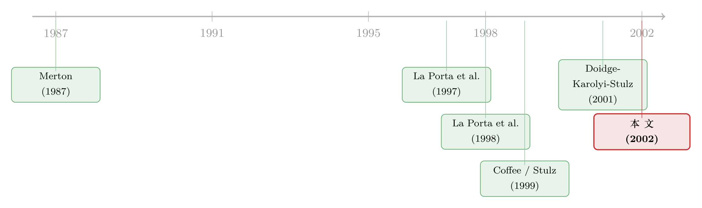

把股票挂到纽约，是为了给小股东一份『不会被偷』的承诺
本文读的是 Reese & Weisbach (2002, Journal of Financial Economics)：一家非美国公司之所以跑到 NYSE 或 Nasdaq 去挂牌，并不只是为了「打通市场、被人看见」，而往往是为了把自己绑在美国证券法上，向小股东许下一个「我不会偷你」的可信承诺。作者用一套跨境上市与后续股权发行的数据证明：上市之后公司发股票的规模会大涨，而这股增量在「本国法律保护差」的公司身上更猛，且这些公司更愿意把股票发到美国之外去。
1 一个看起来不该成立的选择
先抛一个反常识的问题。
假设你是一家德国公司的老板。把股票拿到纽约去上市，意味着什么？意味着你要按美国通用会计准则（US GAAP）重做财报，要按时向美国证监会（SEC）报送 Form 20-F，要服从交易所那一整套公司治理规矩，还要至少部分地接受美国证券法的管辖。1993 年戴姆勒-奔驰（Daimler-Benz）就是活生生的例子——它一登陆 NYSE，就被迫把利润重述成一个显著更低的数字。
这听上去全是成本：更贵的合规、更刺眼的曝光、更难「悄悄拿点好处」的环境。一个理性的老板，为什么要主动把脖子伸进这道枷锁里？
传统的跨境上市理论会给你两个答案。第一个是市场分割 (market segmentation)：本国市场和世界资本市场被各种壁垒隔开，到美国挂牌相当于拆掉壁垒，让更多投资者能买你的股票，于是风险被更好地分散、资本成本下降（Stulz, 1981；Alexander et al., 1987）。第二个是投资者认知 (investor recognition)：在 Merton (1987) 的世界里，没人知道你这只股票的存在，它就只能被一小撮人持有、承受过高的折价；到纽约挂个牌，等于做了一次「我在这里」的广播。
这两个答案都对，但它们都绕开了那道枷锁本身——好像更严的法律和更狠的披露只是「副作用」，是为了换取市场准入不得不忍受的代价。
接着，一个自然的问题是：有没有可能，那道枷锁不是代价，而恰恰是目的？
2 真正关键的一步：把「枷锁」翻译成「承诺」
这正是本文（连同 Coffee, 1999a 与 Stulz, 1999 的理论铺垫）要逼读者看清的一层。
任何金融合约背后都藏着一个隐含条款：法律体系有没有能力执行它。在小股东保护薄弱的国家，控制人可以相对从容地从公司里掏走资源——抬高关联交易、稀释增发、低价私有化挤走小股东（这一类行为后来被 Johnson et al., 2000 命名为「掏空」(tunneling)）。理性的外部投资者不傻，他们会事前就把这种「将来会被偷」的预期打进价格里。结果是：在投资者保护差的国家，公司想对外融一笔钱，要比一家同样的公司在保护好的国家里难得多、贵得多（La Porta et al., 1997, 1998）。
于是，一个想融资的老板就有了动机去做一件看似自残的事——主动给自己上锁。
到 NYSE/Nasdaq 挂牌，正是这样一把锁。Coffee (1999a) 一条条数过美国证券法里那些「比海外通行做法严得多」的条款：比如《1934 年证券交易法》第 13(d) 条，规定任何人持股超过 5% 就必须在五天内申报——这个门槛比欧共体「透明度指令」的 10% 要低得多，直接改变了收购方对小股东的策略空间；又比如第 13(e) 条授权 SEC 管制私有化交易，用 Coffee 的原话说，就是「剥夺控制股东以不公平低价挤走小股东的实际能力」。
把这些条款叠加起来，效果是什么？是控制人「攫取私利」的预期成本被显著抬高了。换句话说，跨境上市让老板可信地承诺：我以后会善待小股东。这种自我捆绑（bonding），就是本文的核心。
这里要分清两个相邻但不同的故事。市场分割讲的是「让更多人能买到我」，绑定假说讲的是「让买我的人相信我不会坑他」。前者是关于触达，后者是关于信任。本文不否认前者，它要补上的是后者——而且要证明后者在数据里留下了独有的、别的理论解释不了的指纹。
3 一个尴尬的理论：方向是不确定的
但真正棘手的一步在这里。
如果绑定真有价值，是不是「保护越差的国家、跨境上市越多」？听上去顺理成章，可作者偏偏说——理论上，这个关系是不确定的（ambiguous）。
为什么？因为老板在做决定时，心里同时挂着两笔账。
一笔是私利。上市会压缩他将来能攫取的私人收益（private benefits），这对他是纯损失。本国保护越差，他原本能偷的就越多，上市让他放弃的也就越多——从这个角度，保护差的老板更不愿意上市。
另一笔是公开股价。上市提升了小股东信任，公司股票的公开市场价值会上升，他手里那部分股权也跟着升值。本国保护越差，绑定带来的增值空间越大——从这个角度，保护差的老板更愿意上市。
两股力量方向相反，净效应取决于老板自己的持股结构、融资需求、私利大小。所以「跨境上市数量 vs. 本国保护」这条关系，理论上根本没有确定的符号。
这正是本文设计上最聪明的地方：它不去赌那条说不清的关系，而是把火力转向一组符号明确的预测。绑定假说真正干净的含义，不在「谁去上市」，而在「上市之后谁去发股票、发到哪里」：
- 所有跨境上市之后，股权发行都会增加（融资本来就是上市的动机）；
- 这股增量，对本国保护弱的公司应当更大（因为绑定为它们打开的融资空间更大）；
- 上市之后的股权发行，强保护国家的公司倾向于发在美国，而弱保护国家的公司倾向于发在美国之外。
第三条尤其反直觉，也最关键。直觉上，既然到美国绑定了，发股票当然该发在美国。但绑定的妙处在于：美国证券法的保护不只覆盖在美国发行的那部分股票——通过 GAAP、SEC 报送和治理约束，它给公司整体的小股东保护都上了一层台阶。所以一家来自弱保护国的公司，可以借在美国挂牌建立起的信誉，回到本国或第三国去发股票，把绑定的红利「带回家」。强保护国的公司本来在家就被信任，绑定的边际价值有限，反而更可能就近在美国市场把那笔股发掉。
于是反转出现了：能最干净地验证绑定的，不是上市本身，而是上市之后这笔股发到了地球的哪一边。
4 数据与识别：用「发行的地理」当指纹
作者的样本是一套跨境上市公司及其历史股权发行记录，覆盖 1985 年 1 月至 1999 年 6 月，上市信息来自纽约银行（Bank of New York）、NYSE 与 Nasdaq 的名录。每家公司被按本国法律传统归入四类——英国普通法（English Common Law）、法国民法（French Civil Law）、德国民法（German Civil Law）、斯堪的纳维亚民法（Scandinavian Civil Law）——这套分类直接承袭 La Porta et al. (1997, 1998)：普通法国家对小股东保护最好，法国民法最差，德国与斯堪的纳维亚居中。
识别的关键变量有两组：一是本国的投资者保护水平（用法律传统及 La Porta 系列的法律指标度量），二是公司上市后股权发行的数量、金额与地理位置（发在美国境内还是境外）。绑定假说的三条预测，分别对应「发行总量上升」「上升幅度与保护负相关」「发行地理与保护相关」三组检验。
这套设计的软肋也要说清楚：跨境上市是公司的自选择（self-selection），不是随机分配。哪些公司去上市、什么时候上市、上完去哪发股，都可能同时被一个看不见的第三因素（比如「成长机会」）驱动。作者的策略不是用工具变量去消解内生性，而是论证——绑定假说能解释的这一整套联合模式（量↑、弱保护更甚、地理分化），是任何既有理论（分割、认知、流动性）都预测不出来的。识别的力量来自「模式的独特性」，而非某个外生冲击。
5 结果：先看一眼谁在上市
先说那条「理论上说不清」的关系。单变量地看，本国保护差的公司确实更爱跨境上市；可一旦控制住公司规模等因素，符号就翻转了——保护好的国家反而上市更密集。这恰好印证了第 3 节那笔「私利 vs. 股价」的拉锯：净效应没有先验符号，数据里它甚至会随着控制变量的加入而改变方向。
这种「按法律传统看上市密度」的差异，在描述性统计里已经一目了然。按每一百家本国上市公司折算的跨境上市数（含全部 OTC、144a、NYSE、Nasdaq），四类法系分别约为：英国普通法 7.41、法国民法 10.09、德国民法 4.36、斯堪的纳维亚民法 22.39；若只数登上 NYSE/Nasdaq（即真正触发 GAAP 与披露约束）的那部分，则分别约为 3.30、4.88、1.27、11.94。可见单看密度，并不存在「保护越差上市越多」的简单规律——这与「方向不确定」的理论完全一致。
接着是三条核心预测，作者报告了与每一条都一致的证据：
- 第一， 跨境上市之后，股权发行的数量与金额都大幅上升。融资确实是上市的重要动机，这一条没有悬念。
- 第二， 本国小股东保护弱的公司，上市后更可能发股票，而且在美国挂牌之后发行的数量更大——绑定为它们撬开的融资空间，确实更大。
- 第三，也是最漂亮的一条： 来自强保护国家的公司，后续更可能把股发在美国；来自弱保护国家的公司，后续更可能把股发在美国之外。绑定的红利被「带回了家」。
三条合起来，指向同一个被反复讲透的核心：有相当一部分非美国公司跨境到美国，是冲着那道枷锁去的——它们买的不是市场准入，是一份能向全世界小股东出示的、可信的保护承诺。
6 文献脉络
这条研究线的起点，是把「法律」请进金融学。La Porta、Lopez-de-Silanes、Shleifer 与 Vishny 的两篇奠基之作——Legal determinants of external finance (1997) 与 Law and Finance (1998)——证明了一国对小股东的法律保护，系统性地决定了它的公司能多便宜、多大量地对外融资。法律传统（普通法 / 民法）从此成了公司金融的一个一阶变量（关于这条「法律决定金融」的源头，可参见《法律是行李，风土是地基》）。

接着，一个自然的追问是：如果本国法律是公司命运的牢笼，公司能不能自己换一部法律？Coffee (1999a) 与 Stulz (1999) 给出了「绑定假说」的理论骨架——到一个保护更强的司法辖区去挂牌，等于租用别国的法律来约束自己。早期的跨境上市文献（Stulz, 1981；Merton, 1987；Foerster & Karolyi, 1999）则铺好了「分割」与「认知」这两块对照组。
本文（Reese & Weisbach, 2002）站在这条脉络的关键转折点上：它把绑定假说从「故事」变成了「可证伪的预测」，并用股权发行的数量与地理给出了第一组大样本证据。几乎同时，Doidge, Karolyi & Stulz (2001) 从另一头切入——他们发现在美国挂牌的外国公司，相对没挂牌的同类享有估值溢价，并把这个溢价归因于绑定（这篇姊妹论文的细读见《把股票挂到纽约，老板就少偷一点》）。两篇论文一个看「估值」、一个看「融资行为」，互为印证。
这条线后来并未就此定论。有人追问：租来的法律真的管用吗？SEC 真的会去执行针对一家外国公司的条款吗？这层质疑后来被 Siegel 等接力检验（见《租来的法律：把股票挂到纽约，真能管住自家的老板吗？》）；也有人发现，跨境上市的绑定还顺带改写了控制权的私人价值（《租一部更严的法律，老板手里的「控制权」就贬值了》）乃至反收购的格局（《把股票挂到国外去，竟是一道防收购的「护城河」》）。本文，是这一切争论的共同起点之一。
7 评论与延伸（Q&A + 研究方向）
(a) 几个可能的疑问
Q：绑定假说和「市场分割」假说，到底怎么区分？
关键在两者的预测不重叠的那一块。分割假说预测上市后股价上涨、资本成本下降，但它对「上市后把股发到哪个国家」没有任何说法。本文第三条预测——弱保护国公司倾向于把后续股权发到美国之外——是分割、认知、流动性这些理论都推不出来的。正是这条「地理分化」给了绑定假说一个别人偷不走的指纹。
Q：上市公司是自选择的，凭什么说是绑定在起作用，而不是别的什么共同因素？
这是本文最该被追问的地方。作者承认无法用外生冲击做干净的因果识别，他的辩护是「联合模式的独特性」：量上升、且对弱保护公司更甚、且伴随发行地理的分化，这一整套模式只有绑定假说能同时解释。这是一种「最佳解释推断」式的识别，说服力强但不等于因果铁证——这也是后续文献（如 Doidge et al. 的估值证据、Siegel 的执行力检验）必须接力的原因。
Q：为什么弱保护国的公司反而把股发到美国之外，这不是很奇怪吗？
因为美国证券法的保护是「附着在公司上」的，不只附着在「美国发行的那批股票」上。一旦通过挂牌建立了 GAAP+SEC+治理的信誉，公司整体的小股东保护都升了级，于是它可以带着这份信誉回本国或第三国去发股，把绑定红利的覆盖面最大化。强保护国公司本来在家就被信任，绑定的边际增值小，就近在美国发反而更顺。
Q：那条「保护越差、上市越多」的单变量关系，控制规模后就翻转了，这算证据吗？
它本身不是绑定的证据，反而是绑定理论「方向不确定」预测的印证。老板心里「放弃私利」与「股价增值」两股力相反，净效应没有先验符号，数据里符号随控制变量翻转，恰恰说明这条关系不该被当作核心检验——本文把检验重心放到发行行为上，正是为了绕开这片浑水。
Q：这套结论对今天还成立吗？毕竟 2002 年之后又出了 SOX、又有大量公司从美国退市。
本文的样本止于 1999 年 6 月，2002 年的萨班斯-奥克斯利法案（SOX）大幅抬高了在美上市的合规成本，绑定的「价格」变了，后续是否还有同样强度的绑定动机是一个开放问题。但本文刻画的机制——用更严的法律换取小股东信任、再把信任变现为融资——是不依赖于具体年代的，它至今仍是理解任何「自愿上更严监管」行为的基准框架。
(b) 几个可能的研究问题与提案
1. 把绑定假说搬到公司债 / 信用市场。 【经济故事】本文只看了股权。可债权人同样会被「掏空」，同样会事前把弱保护打进信用利差。一家弱保护国公司跨境上市、绑定了小股东保护之后，它的债务融资成本会不会下降、债券发行会不会增加、发行地理会不会同样分化？如果绑定保护的是「外部索取权人」整体，那债市应当留下平行的指纹。 【可行性】中。所需数据：跨境上市名录（可复刻本文来源）× 国际债券发行库（如 Dealogic/SDC）× 二级市场利差（需 TRACE 之外的国际债券报价，是难点）。识别仍受自选择困扰，但「股、债指纹是否一致」本身就是对绑定机制的强检验。
2. 外资持有人视角：绑定改变的是「谁来买」吗？ 【经济故事】绑定若真提升了小股东信任，最直接的受益者应当是外国机构投资者——他们原本最怕被掏空。上市后，公司的外资持股比例、尤其是来自强保护国机构的持股，是否显著上升？这把「信任」从行为（发股）推进到了「持有人结构」这个更微观的层面。 【可行性】中高。所需数据：FactSet/Refinitiv 机构持股 × 跨境上市事件。可做事件研究 (event study) 看持股结构在挂牌前后的变化，识别相对干净。与本博客关于外资持有人的若干篇可形成对话。
3. SOX 作为「绑定价格」的外生冲击。 【经济故事】2002 年 SOX 突然抬高了在美绑定的成本。如果绑定动机是真的，那么 SOX 之后，弱保护国公司的跨境上市与后续发行行为应当比强保护国公司收缩得更厉害（因为它们原本对绑定的需求弹性不同）。这给了一个准自然实验，去给本文的横截面相关赋予更强的因果含义。 【可行性】高。所需数据：本文同源的上市与发行数据延展至 2002 年后，做按法系分组的双重差分 (difference-in-differences, DiD)。SOX 的时点外生且清晰，是少有的能给绑定假说「加因果」的设计。
4. 绑定与后续的「掏空」实测。 【经济故事】本文论证的是事前承诺，但承诺有没有兑现？挂牌之后，这些公司的关联交易、现金股利政策（La Porta et al., 2000b 的视角）、盈余管理（Leuz 等）是否真的向「善待小股东」收敛？这能把绑定从「投资者相信它有用」推进到「它确实约束了行为」。 【可行性】中。所需数据：跨境上市公司的财报与关联交易披露（新兴市场数据质量是瓶颈）。可借盈余管理度量做前后对比（可参见《财报里的「水分」，原来是大股东在为自己打掩护》）。
我的判断
这篇论文的贡献，在于它把一个本来很「软」的法律故事，硬生生压成了三条符号明确、可证伪的预测，并且最关键的那条——发行的地理分化——是其他跨境上市理论结构性地推不出来的。这是好实证设计的范本：当你无法做干净的因果识别时，就去寻找一个只有你的理论才能预测的联合模式，用模式的独特性替代外生性。
我对识别的主要担忧，仍是自选择。「成长机会」这个看不见的变量，几乎可以同时驱动上市、发行量和发行地理，本文用「模式独特性」来防守，但防不住一个足够灵活的、内生于成长机会的替代故事。后续 Doidge et al. (2001) 的估值溢价是有力的旁证，可两篇都建立在同一类观察数据上，共享同一种内生性。真正能让人放心的，是像 SOX 这样的外生冲击——这也正是我最想看到的后续：用绑定价格的突变，去把这套漂亮的横截面相关，钉成一条因果链。
参考文献
- Alexander, G., Eun, C., Janakiramanan, S. (1987). Asset pricing and dual listing on foreign capital markets: a note. Journal of Finance 42, 151–158.
- Coffee, J. (1999a). The future as history: the prospects for global convergence in corporate governance and its implications. Northwestern University Law Review 93, 641–708.
- Doidge, C., Karolyi, G.A., Stulz, R.M. (2001). Why are foreign firms listed in the US worth more? Working paper, Ohio State University.
- Foerster, S.R., Karolyi, A. (1999). The effects of market segmentation and investor recognition on asset prices: evidence from foreign stocks listing in the United States. Journal of Finance 54, 981–1013.
- Johnson, S., La Porta, R., Lopez-de-Silanes, F., Shleifer, A. (2000). Tunneling. American Economic Review Papers and Proceedings 90, 22–27.
- La Porta, R., Lopez-de-Silanes, F., Shleifer, A., Vishny, R. (1997). Legal determinants of external finance. Journal of Finance 52, 1131–1150.
- La Porta, R., Lopez-de-Silanes, F., Shleifer, A., Vishny, R. (1998). Law and finance. Journal of Political Economy 106, 1113–1155.
- Merton, R. (1987). A simple model of capital market equilibrium with incomplete information. Journal of Finance 42, 483–510.
- Reese, W.A., Weisbach, M.S. (2002). Protection of minority shareholder interests, cross-listings in the United States, and subsequent equity offerings. Journal of Financial Economics 66(1), 65–104.
- Stulz, R. (1981). On the effects of barriers to international investment. Journal of Finance 36, 923–934.
- Stulz, R. (1999). Globalization of equity markets and the cost of capital. Journal of Applied Corporate Finance 12, 8–25.